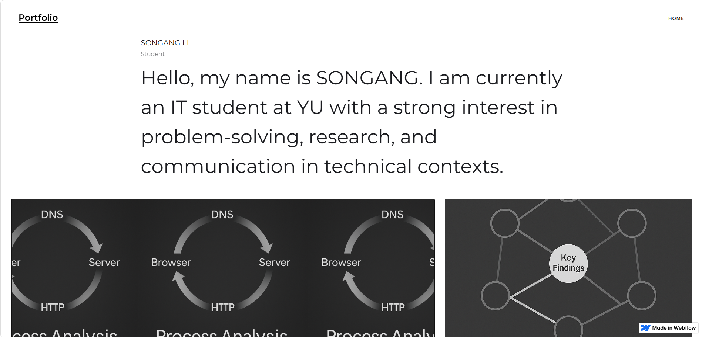
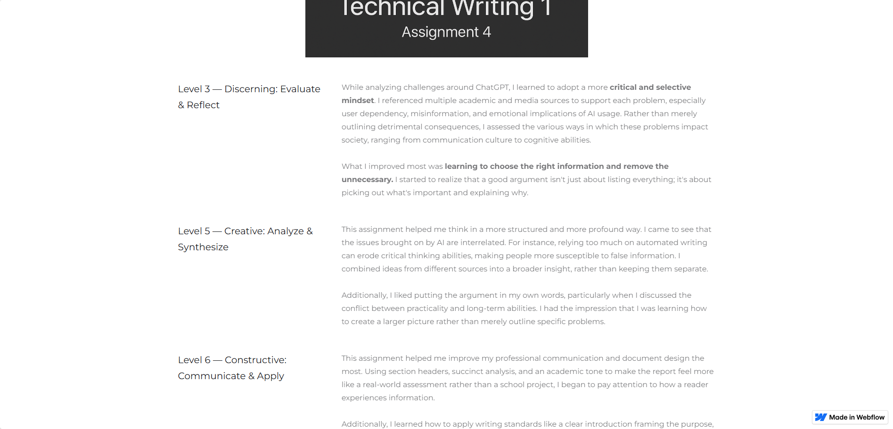

01 · Early design study
Learning recordEarly Webflow Portfolio
An early portfolio created for a writing course. It is included as an honest record of how my visual hierarchy, spacing, content strategy, and technical confidence have changed.
- Role
- Student designer and builder
- Tool
- Webflow
- Context
- Technical writing course
- Value
- Visible evidence of growth
Problem Present technical communication work in a simple portfolio format with limited design experience.
Approach Use large editorial text, monochrome graphics, and a basic project grid in a no-code environment.
Reflection The result is visually immature, but it makes my growth easier to see when compared with my later commercial work.